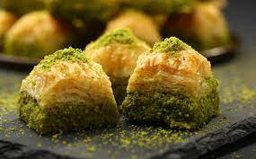

Baklava

Sweet, Sweet Honey
This honey baklava is flaky, crisp and tender and I
love that it isn’t overly sweet. It’s basically a
party in your mouth. I am a huge fan of baklava and
this is the BEST baklava recipe I have ever tried.
Hands down.
You will love the hint of mellow lemony flavor which
offsets the sweetness and compliments the cinnamon.
It’s truly delicious.
Store-bought baklava has nothing on this and trust me,
I’ve been around the block when shopping for baklava.
This baklava recipe is well loved wherever it goes and
it is definitely a reader and family favorite!
Ingredients
- 100g walnuts
- 100g almonds
- 100g pistachios
- 2 tsp ground cinnamon
- 1/2 tsp ground cloves
- 200g butter
- 2x270g packets (12 sheets) of filo pastry
- 300g sugar
- 100ml Greek honey
- 1 cinnamon stick
- 2 strips of orange zest
Steps
- Preheat the oven to 180ºC/350ºF/gas 4. Place all
the syrup ingredients in a medium saucepan with
300ml of water and bring to a gentle simmer. Let
it bubble away, stirring occasionally, for 15
minutes or until the liquid has reduced by a
third. Leave to cool. (The syrup must be cool
when it is poured over the pastry otherwise the
pastry will go soggy.)
- Blitz the nuts in a food processor until coarse,
then tip into a bowl and stir through the
cinnamon and cloves.
- Melt the butter, using a little of it to lightly
grease a 40 x 25cm shallow tin with a pastry
brush. Gently unfold the filo and cover with a
damp tea towel to stop it cracking.
- Layer sheets of filo in the tin and brush each
layer with melted butter. After 4 layers, scatter
over half the nut mixture; repeat with 4 layers
of filo, then the rest of the nuts. Top with the
last 4 layers of filo, then generously butter
the top. Cut into diamonds with a sharp knife –
ensure the blade goes right to the bottom.
- Bake on the middle shelf of the oven on a hot
baking sheet for 30–35 minutes, or until golden
brown and crisp, reducing the temperature to
170ºC/325ºF/gas 3 if the baklava looks as though
it is browning too quickly.
- Remove the baklava from the oven and spoon half
the cooled syrup over the top. Leave for 5
minutes, then spoon over the remaining syrup.
Allow the baklava to cool before removing the
individual pieces from the dish with a palette
knife.